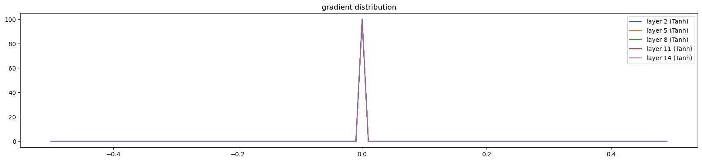

from tqdm import tqdm
import numpy
import torch
from torch import nn
import torch.nn.functional as F
import matplotlib.pyplot as plot
import random
import mathBuilding Makemore MLP 2 Exercise
Imports
g = torch.Generator().manual_seed(42)Setup
words = open('../data/names.txt', 'r').read().splitlines()
words[:8]['emma', 'olivia', 'ava', 'isabella', 'sophia', 'charlotte', 'mia', 'amelia']chars = sorted(list(set(''.join(words))))
stoi = {s: i+1 for i, s in enumerate(chars)}
stoi['.'] = 0
itos = {i:s for s, i in stoi.items()}len(words)32033def generate_training_set(words, block_size, print_disabled=False):
chars = sorted(list(set(''.join(words))))
stoi = {s: i+1 for i, s in enumerate(chars)}
stoi['.'] = 0
itos = {i:s for s, i in stoi.items()}
X, Y = [], []
for w in words:
if print_disabled: print(w)
context = [0] * block_size
for ch in w + '.':
ix = stoi[ch]
X.append(context)
Y.append(ix)
if print_disabled: print(''.join(itos[i] for i in context), '--->', itos[ix])
context = context[1:] + [ix] # crop and append
X = torch.tensor(X)
Y = torch.tensor(Y)
return X, YX, Y = generate_training_set(words, 3)X.shape, Y.shape(torch.Size([228146, 3]), torch.Size([228146]))def generate_train_valid_test_split(words, block_size=3):
random.seed(42)
random.shuffle(words)
n1 = int(0.8*len(words))
n2 = int(0.9*len(words))
Xtr, Ytr = generate_training_set(words[:n1], block_size)
Xdev, Ydev = generate_training_set(words[n1:n2], block_size)
Xte, Yte = generate_training_set(words[n2:], block_size)
return Xtr, Ytr, Xdev, Ydev, Xte, YteXtr, Ytr, Xdev, Ydev, Xte, Yte = generate_train_valid_test_split(words, block_size=3)Xtr.shape, Ytr.shape(torch.Size([182625, 3]), torch.Size([182625]))Xdev.shape, Ydev.shape(torch.Size([22655, 3]), torch.Size([22655]))Xte.shape, Yte.shape(torch.Size([22866, 3]), torch.Size([22866]))E01
I did not get around to seeing what happens when you initialize all weights and biases to zero. Try this and train the neural net. You might think either that 1) the network trains just fine or 2) the network doesn’t train at all, but actually it is 3) the network trains but only partially, and achieves a pretty bad final performance.
Inspect the gradients and activations to figure out what is happening and why the network is only partially training, and what part is being trained exactly.
def train(X, Y, epochs, bs = 32, context_length = 3, vocab_size = 27, embedding_size = 10, n_hidden = 100, print_at_every_epoch=10):
C = torch.randn((vocab_size, embedding_size), generator=g)
layers = [
nn.Linear(context_length * embedding_size, n_hidden), nn.BatchNorm1d(n_hidden), nn.Tanh(),
nn.Linear(n_hidden, n_hidden), nn.BatchNorm1d(n_hidden), nn.Tanh(),
nn.Linear(n_hidden, n_hidden), nn.BatchNorm1d(n_hidden), nn.Tanh(),
nn.Linear(n_hidden, n_hidden), nn.BatchNorm1d(n_hidden), nn.Tanh(),
nn.Linear(n_hidden, n_hidden), nn.BatchNorm1d(n_hidden), nn.Tanh(),
nn.Linear(n_hidden, vocab_size), nn.BatchNorm1d(vocab_size)
]
visualisation = [-1] * len(layers)
def get_activation(layer_num):
def hook_fn(m, i, o): visualisation[layer_num] = o
return hook_fn
for i, layer in enumerate(layers):
layer.register_forward_hook(get_activation(i))
if isinstance(layer, nn.Linear):
nn.init.zeros_(layer.weight)
nn.init.zeros_(layer.bias)
print('Total number of layers are : ', len(layers))
parameters = [C] + [p for layer in layers for p in layer.parameters()]
print('Total number of parameters are :', sum(p.nelement() for p in parameters))
# set parameters to required grad
for p in parameters:
p.requires_grad = True
lossi = []
ud = []
for i in range(epochs):
ix = torch.randint(0, len(X), (bs,), generator=g)
Xb, Yb = X[ix], Y[ix]
emb = C[Xb]
x = emb.view(emb.shape[0], -1)
for layer in layers:
x = layer(x)
x.retain_grad()
loss = F.cross_entropy(x, Yb)
for p in parameters:
p.grad = None
loss.backward()
lr = 0.1 if i <= 100_000 else 0.01 # lr decay
for p in parameters:
p.data += -lr * p.grad
if print_at_every_epoch:
if i % print_at_every_epoch == 0:
print(f'Epoch {i} Loss {loss.item()}')
lossi.append(loss.item())
with torch.no_grad():
for p in parameters:
grad_update_data_ratio = (lr * p.grad.std() / p.data.std()).log10().item()
ud.append(grad_update_data_ratio)
return C, layers, lossi, ud, visualisationC, layers, losses, uds, v = train(Xtr, Ytr, 1000, print_at_every_epoch=100)Total number of layers are : 17
Total number of parameters are : 47551
Epoch 0 Loss 3.295837163925171
Epoch 100 Loss 3.0274267196655273
Epoch 200 Loss 2.801142930984497
Epoch 300 Loss 2.839231491088867
Epoch 400 Loss 2.77958083152771
Epoch 500 Loss 2.7113969326019287
Epoch 600 Loss 2.7721636295318604
Epoch 700 Loss 2.801912784576416
Epoch 800 Loss 2.7530055046081543
Epoch 900 Loss 3.0189149379730225v[14].shapetorch.Size([32, 100])v[14].grad.shapetorch.Size([32, 100])def evaluate_loss(model, embedding, X, Y):
emb = embedding[X]
logits = emb.view(emb.shape[0], -1)
for layer in model: logits = layer(logits)
return F.cross_entropy(logits, Y)evaluate_loss(layers,C, Xtr, Ytr), evaluate_loss(layers,C, Xdev, Ydev)(tensor(2.8327, grad_fn=<NllLossBackward0>),
tensor(2.8316, grad_fn=<NllLossBackward0>))emb = C[Xdev]
logits = emb.view(emb.shape[0], -1)The loss is not good. The network partially trains
Lets see the activations and gradients
def visualize_histograms(layers, C, Xdev, otype='activations'):
plot.figure(figsize=(20, 4))
legends = []
emb = C[Xdev]
logits = emb.view(emb.shape[0], -1)
for i, layer in enumerate(layers[:-1]):
if isinstance(layer, nn.Tanh):
t = v[i]
if otype == 'gradients': t = v[i].grad
print('layer %d (%10s): mean %+f, std %e' % (i, layer.__class__.__name__, t.mean(), t.std()))
hy, hx = torch.histogram(t, density=True)
plot.plot(hx[:-1].detach(), hy.detach())
legends.append(f'layer {i} ({layer.__class__.__name__})')
plot.legend(legends)
plot.title('gradient distribution')visualize_histograms(layers, C, Xdev)layer 2 ( Tanh): mean +0.000000, std 0.000000e+00
layer 5 ( Tanh): mean +0.000000, std 0.000000e+00
layer 8 ( Tanh): mean +0.000000, std 0.000000e+00
layer 11 ( Tanh): mean +0.000000, std 0.000000e+00
layer 14 ( Tanh): mean +0.000000, std 0.000000e+00
C, layers, losses, uds, v = train(Xtr, Ytr, 1000, print_at_every_epoch=100)Total number of layers are : 17
Total number of parameters are : 47551
Epoch 0 Loss 3.295837163925171
Epoch 100 Loss 3.063408613204956
Epoch 200 Loss 2.780902862548828
Epoch 300 Loss 3.1825616359710693
Epoch 400 Loss 2.9627223014831543
Epoch 500 Loss 2.983510971069336
Epoch 600 Loss 2.810227394104004
Epoch 700 Loss 3.0428051948547363
Epoch 800 Loss 2.9010205268859863
Epoch 900 Loss 2.6343629360198975visualize_histograms(layers, C, Xdev, 'gradients')layer 2 ( Tanh): mean +0.000000, std 0.000000e+00
layer 5 ( Tanh): mean +0.000000, std 0.000000e+00
layer 8 ( Tanh): mean +0.000000, std 0.000000e+00
layer 11 ( Tanh): mean +0.000000, std 0.000000e+00
layer 14 ( Tanh): mean +0.000000, std 0.000000e+00Only the last two layers’s biases are trained i.e. Linear and Batchnorm layer. It is partially training because the last layer’s tanh activations and gradients are zero. Therefore only the last layers biases are changing due to the loss function’s derivative
E02
BatchNorm, unlike other normalization layers like LayerNorm/GroupNorm etc. has the big advantage that after training, the batchnorm gamma/beta can be “folded into” the weights of the preceeding Linear layers, effectively erasing the need to forward it at test time. Set up a small 3-layer MLP with batchnorms, train the network, then “fold” the batchnorm gamma/beta into the preceeding Linear layer’s W,b by creating a new W2, b2 and erasing the batch norm. Verify that this gives the same forward pass during inference. i.e. we see that the batchnorm is there just for stabilizing the training, and can be thrown out after training is done! pretty cool.
def train(X, Y, epochs, bs = 32, context_length = 3, vocab_size = 27, embedding_size = 10, n_hidden = 100, print_at_every_epoch=10):
C = torch.randn((vocab_size, embedding_size), generator=g)
layers = [
nn.Linear(context_length * embedding_size, vocab_size),
nn.BatchNorm1d(vocab_size),
nn.Tanh()
]
print('Total number of layers are : ', len(layers))
parameters = [C] + [p for layer in layers for p in layer.parameters()]
print('Total number of parameters are :', sum(p.nelement() for p in parameters))
# set parameters to required grad
for p in parameters:
p.requires_grad = True
lossi = []
for i in range(epochs):
ix = torch.randint(0, len(X), (bs,), generator=g)
Xb, Yb = X[ix], Y[ix]
emb = C[Xb]
x = emb.view(emb.shape[0], -1)
for layer in layers:
x = layer(x)
loss = F.cross_entropy(x, Yb)
for p in parameters:
p.grad = None
loss.backward()
lr = 0.1 if i <= 100_000 else 0.01 # lr decay
for p in parameters:
p.data += -lr * p.grad
if print_at_every_epoch:
if i % print_at_every_epoch == 0:
print(f'Epoch {i} Loss {loss.item()}')
lossi.append(loss.item())
return C, layers, lossiC, layers, losses = train(Xtr, Ytr, 1000, print_at_every_epoch=10)Total number of layers are : 3
Total number of parameters are : 1161
Epoch 0 Loss 3.587299108505249
Epoch 10 Loss 3.2293121814727783
Epoch 20 Loss 3.0814695358276367
Epoch 30 Loss 3.2448253631591797
Epoch 40 Loss 3.101447582244873
Epoch 50 Loss 3.429870367050171
Epoch 60 Loss 3.221737861633301
Epoch 70 Loss 3.0934414863586426
Epoch 80 Loss 3.1333014965057373
Epoch 90 Loss 3.0430803298950195
Epoch 100 Loss 3.222014904022217
Epoch 110 Loss 2.9680709838867188
Epoch 120 Loss 3.0302188396453857
Epoch 130 Loss 2.913753032684326
Epoch 140 Loss 3.072633743286133
Epoch 150 Loss 2.923525333404541
Epoch 160 Loss 2.755462646484375
Epoch 170 Loss 2.9250504970550537
Epoch 180 Loss 3.050321578979492
Epoch 190 Loss 2.914196491241455
Epoch 200 Loss 3.108175277709961
Epoch 210 Loss 2.7188565731048584
Epoch 220 Loss 2.8650524616241455
Epoch 230 Loss 2.879669189453125
Epoch 240 Loss 2.9316511154174805
Epoch 250 Loss 3.002821207046509
Epoch 260 Loss 2.710664987564087
Epoch 270 Loss 2.9430744647979736
Epoch 280 Loss 3.0812506675720215
Epoch 290 Loss 2.9047486782073975
Epoch 300 Loss 2.9102120399475098
Epoch 310 Loss 2.798466205596924
Epoch 320 Loss 2.9486002922058105
Epoch 330 Loss 2.7822418212890625
Epoch 340 Loss 2.922684669494629
Epoch 350 Loss 3.0438175201416016
Epoch 360 Loss 2.863776206970215
Epoch 370 Loss 2.712582588195801
Epoch 380 Loss 2.9411137104034424
Epoch 390 Loss 2.966948986053467
Epoch 400 Loss 2.787348985671997
Epoch 410 Loss 2.6891531944274902
Epoch 420 Loss 2.789918899536133
Epoch 430 Loss 2.846391439437866
Epoch 440 Loss 2.705667018890381
Epoch 450 Loss 2.8475072383880615
Epoch 460 Loss 2.6863129138946533
Epoch 470 Loss 2.7115252017974854
Epoch 480 Loss 2.7697083950042725
Epoch 490 Loss 2.8165030479431152
Epoch 500 Loss 2.652785539627075
Epoch 510 Loss 2.7844464778900146
Epoch 520 Loss 2.5727062225341797
Epoch 530 Loss 2.773362636566162
Epoch 540 Loss 2.639413356781006
Epoch 550 Loss 2.937549352645874
Epoch 560 Loss 2.733950614929199
Epoch 570 Loss 2.9230353832244873
Epoch 580 Loss 2.7119667530059814
Epoch 590 Loss 2.629343032836914
Epoch 600 Loss 2.8231914043426514
Epoch 610 Loss 2.896239995956421
Epoch 620 Loss 2.754451274871826
Epoch 630 Loss 2.8002326488494873
Epoch 640 Loss 2.694410800933838
Epoch 650 Loss 2.56418776512146
Epoch 660 Loss 2.7440552711486816
Epoch 670 Loss 2.738240957260132
Epoch 680 Loss 2.872488260269165
Epoch 690 Loss 2.8462133407592773
Epoch 700 Loss 2.6969306468963623
Epoch 710 Loss 2.8000383377075195
Epoch 720 Loss 2.663419246673584
Epoch 730 Loss 2.8632514476776123
Epoch 740 Loss 2.5700666904449463
Epoch 750 Loss 2.537867784500122
Epoch 760 Loss 2.601379156112671
Epoch 770 Loss 2.5540926456451416
Epoch 780 Loss 2.5457212924957275
Epoch 790 Loss 2.7192153930664062
Epoch 800 Loss 2.7309796810150146
Epoch 810 Loss 2.7865402698516846
Epoch 820 Loss 2.7576744556427
Epoch 830 Loss 2.7156918048858643
Epoch 840 Loss 2.634010076522827
Epoch 850 Loss 2.7768185138702393
Epoch 860 Loss 2.6386663913726807
Epoch 870 Loss 2.7992215156555176
Epoch 880 Loss 2.6494650840759277
Epoch 890 Loss 2.6424853801727295
Epoch 900 Loss 2.85687255859375
Epoch 910 Loss 2.843587636947632
Epoch 920 Loss 2.7913031578063965
Epoch 930 Loss 2.5635101795196533
Epoch 940 Loss 2.5651516914367676
Epoch 950 Loss 2.635497570037842
Epoch 960 Loss 2.7413291931152344
Epoch 970 Loss 2.7723095417022705
Epoch 980 Loss 2.8175578117370605
Epoch 990 Loss 2.7129404544830322len(layers)3def compute_logits(embedding, model, X):
emb = embedding[X]
logits = emb.view(emb.shape[0], -1)
for layer in model: logits = layer(logits)
return logitso1 = compute_logits(C, layers, Xdev)11.4 ms ± 212 µs per loop (mean ± std. dev. of 7 runs, 100 loops each)Lets fold the batchnorm into the previous linear layer
def compute_logits_folded_bn(embedding, model, X):
emb = embedding[X]
logits = emb.view(emb.shape[0], -1)
# linear layer weight and bias
w0 = model[0].weight.T
b0 = model[0].bias
# batchnorm weight and bias
w1 = model[1].weight.T
b1 = model[1].bias
# batchnorm running mean and std
running_mean = layers[1].running_mean
running_std = torch.sqrt(layers[1].running_var)
# new weight and bias
w2 = (w1 * w0) / running_std
b2 = w1 * (b0 - running_mean) / running_std + b1
return F.tanh( logits @ w2 + b2 )o2 = compute_logits_folded_bn(C, layers, Xdev)8.37 ms ± 201 µs per loop (mean ± std. dev. of 7 runs, 100 loops each)o1tensor([[-0.8510, 0.9600, 0.6935, ..., -0.5150, -0.5210, 0.6189],
[-0.8332, 0.4823, -0.3241, ..., -0.4695, 0.7627, -0.2997],
[-0.8381, 0.8900, -0.6281, ..., -0.7169, 0.8849, -0.6847],
...,
[ 0.9905, 0.9764, -0.9539, ..., -0.9095, -0.9541, -0.9398],
[ 0.9542, 0.9854, -0.8611, ..., -0.9231, 0.6759, -0.9285],
[ 0.9966, -0.8805, -0.8403, ..., -0.9066, 0.3652, -0.8431]],
grad_fn=<TanhBackward0>)o2tensor([[-0.8547, 0.9598, 0.6821, ..., -0.5114, -0.5483, 0.6069],
[-0.8373, 0.4803, -0.3395, ..., -0.4656, 0.7448, -0.3119],
[-0.8420, 0.8895, -0.6376, ..., -0.7149, 0.8754, -0.6903],
...,
[ 0.9903, 0.9763, -0.9550, ..., -0.9090, -0.9571, -0.9405],
[ 0.9530, 0.9853, -0.8646, ..., -0.9228, 0.6529, -0.9294],
[ 0.9965, -0.8813, -0.8444, ..., -0.9061, 0.3298, -0.8455]],
grad_fn=<TanhBackward0>)torch.nn.functional.mse_loss(o1, o2)tensor(0.0003, grad_fn=<MseLossBackward0>)they are close, the little difference might be due to epsilon added to the variance